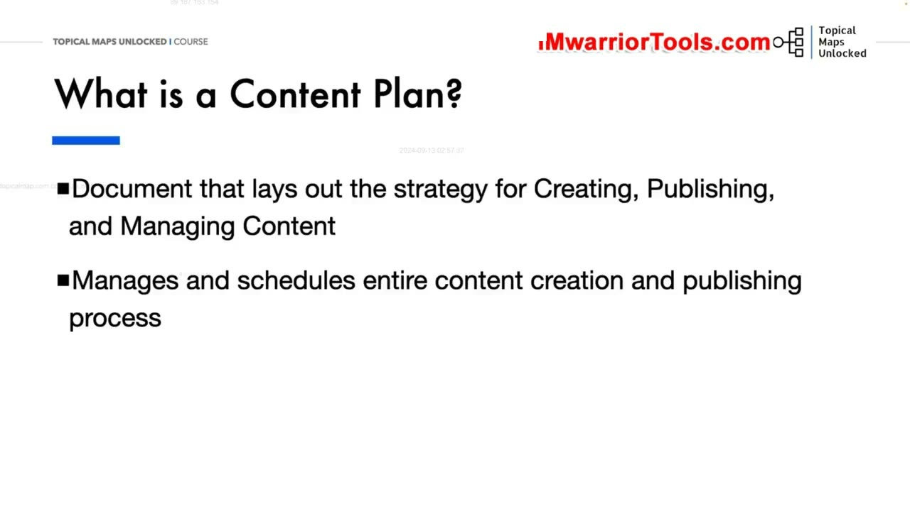
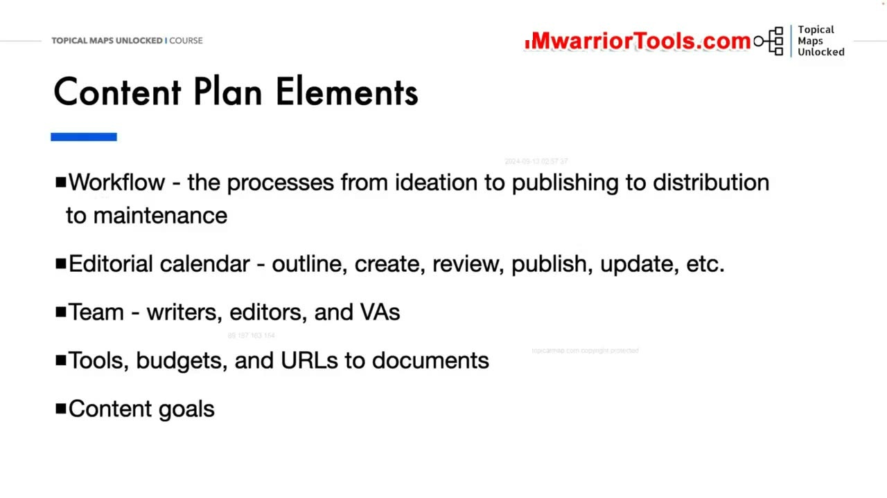
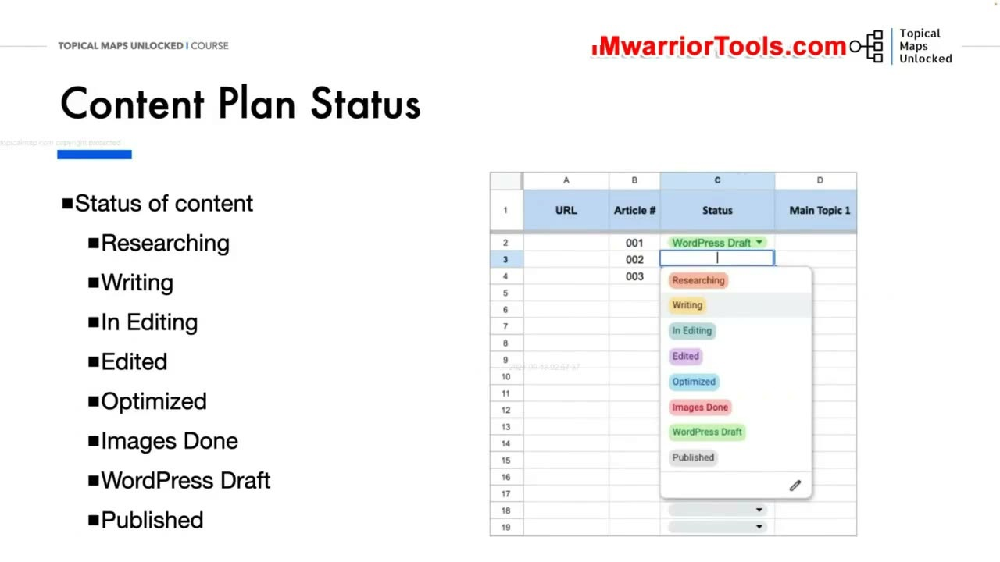
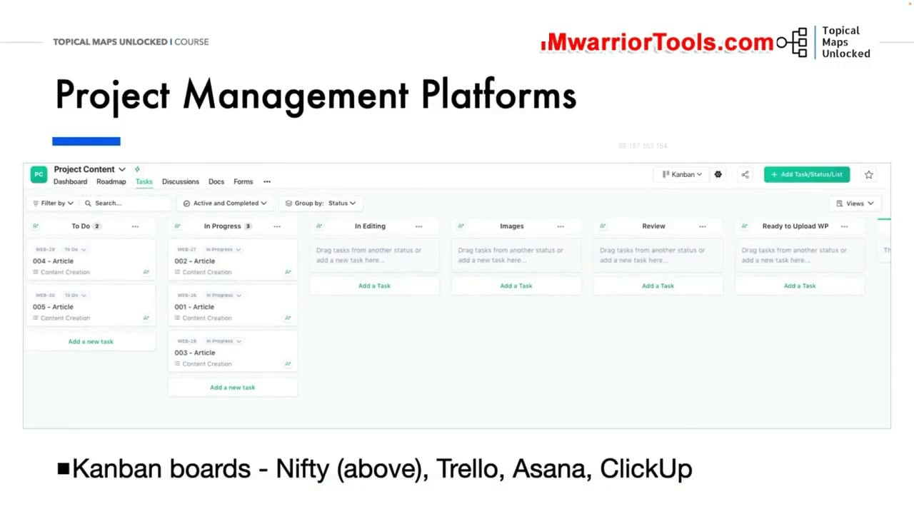

Content Plan Overview
1. Kế hoạch nội dung (Content Plan) là gì? Khác biệt so với Topical Map
Trong bài học này, Yoyao phân định rành mạch sự khác biệt giữa hai khái niệm thường bị đánh đồng: Topical Map và Content Plan.
Nếu như Topical Map là bản thiết kế kiến trúc thuần túy mô tả cấu trúc phân cấp các chủ đề và từ khóa; thì Content Plan (Kế hoạch nội dung) là tài liệu tác nghiệp quản lý và điều hành toàn bộ quy trình: từ việc lập lịch trình sản xuất, phân công người viết, duyệt bài, xuất bản cho đến bảo trì cập nhật nội dung theo thời gian.
Một kế hoạch nội dung chuẩn mực giúp đồng bộ hoàn hảo giữa mục tiêu kinh doanh tổng thể của thương hiệu với nhu cầu thực tế của độc giả, đảm bảo quy trình sản xuất luôn diễn ra trơn tru và hiệu quả nhất.

2. Sáu thành phần cốt lõi cấu tạo nên một Content Plan chuyên nghiệp
Yoyao liệt kê 6 thành phần bắt buộc phải có trong một bản kế hoạch nội dung chuyên nghiệp:
- Workflow (Quy trình làm việc): Toàn bộ các bước chuyển tiếp rõ ràng từ khâu lên ý tưởng, viết dàn ý (brief), sản xuất bài, biên tập rà soát, xuất bản lên CMS, phân phối đa kênh cho đến bảo trì định kỳ.
- Editorial Calendar (Lịch biên tập): Lịch trình xuất bản cụ thể với các mốc thời gian rõ ràng cho từng bài viết.
- Team (Cơ cấu đội ngũ): Xác định rõ trách nhiệm của từng cá nhân: người viết bài (writers), biên tập viên (editors) và trợ lý ảo (VAs).
- Tools & Budgets (Công cụ và Ngân sách): Tài nguyên công cụ hỗ trợ, ngân sách chi trả cho người viết và đường dẫn lưu trữ tài liệu.
- Content Goals (Mục tiêu nội dung): Mục tiêu cụ thể của từng bài viết (kéo traffic, thu thập leads hay bán hàng).
- Content Performance (Đo lường hiệu suất): Các chỉ số KPI theo dõi sau khi xuất bản (thứ hạng, lượt xem, thời gian đọc).

3. Tám trạng thái vận hành bài viết trong bảng tính (Content Plan Status)
Để quản lý hàng trăm bài viết đang sản xuất đồng thời mà không bị hỗn loạn, Yoyao thiết lập một cột Status (Trạng thái) với 8 bước tiến trình chuẩn mực:
Researching: Đang nghiên cứu tài liệu và đối thủ.Writing: Cây bút đang tiến hành viết bản thảo.In Editing: Đang trong quá trình biên tập viên rà soát lỗi chính tả và hành văn.Edited: Đã biên tập xong văn bản.Optimized: Đã tối ưu hóa các từ khóa On-page trên các phần mềm như Frase hoặc SurferSEO.Images Done: Đã thiết kế xong ảnh bìa và chụp ảnh minh họa bài viết.WordPress Draft: Đã đưa bài viết lên hệ thống CMS dưới dạng bản nháp để kiểm tra định dạng hiển thị.Published: Bài viết chính thức được xuất bản công khai lên website.

4. Nâng cấp lên các nền tảng quản trị dự án dạng Kanban: Nifty, Trello, Asana, ClickUp
Bên cạnh việc theo dõi trên bảng tính Google Sheets, khi đội ngũ phát triển quy mô lớn từ 3 đến 5 người trở lên, Yoyao khuyên bạn nên chuyển đổi quy trình sang các phần mềm quản trị dự án hiện đại có giao diện Bảng Kanban (Kanban Boards) như Nifty PM, Trello, Asana hoặc ClickUp.
Mỗi bài viết sẽ là một thẻ tác vụ (Task card) di chuyển linh hoạt qua từng cột trạng thái. Bạn có thể đính kèm liên kết tài liệu Frase, chỉ định người viết, đặt hạn chót (Deadline) và thảo luận trực tiếp trên thẻ bài viết. Sự kết hợp giữa bảng tính lưu trữ dữ liệu và bảng Kanban điều phối công việc sẽ tạo nên một cỗ máy sản xuất nội dung vận hành mượt mà và chính xác tuyệt đối.
Điều này giúp người quản lý dự án có thể bao quát toàn bộ tiến độ sản xuất trong nháy mắt, kịp thời phát hiện các điểm nghẽn cổ chai và thúc đẩy tốc độ xuất bản của toàn bộ website lên tầm cao mới.

Nguồn và đối chiếu
- Topical Maps Unlocked 2.0 · 03-Content Plan Overview (Video bài học chính).
- Bản tiếng Anh không có video riêng cho bài học này; nội dung đối chiếu trực tiếp từ slide và video chính.